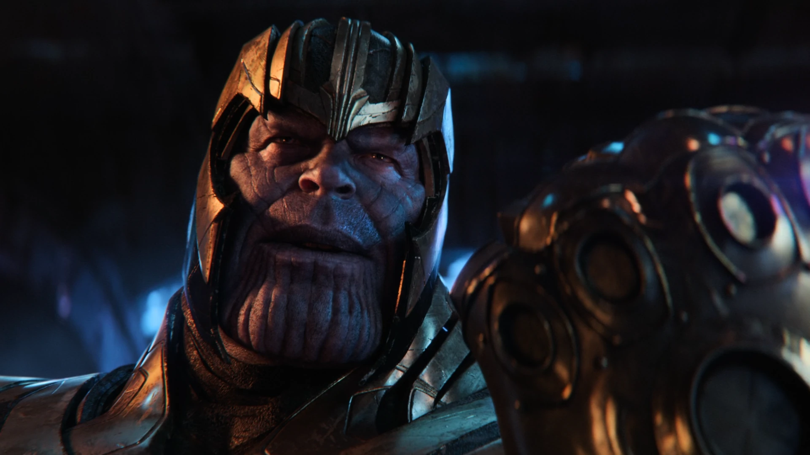
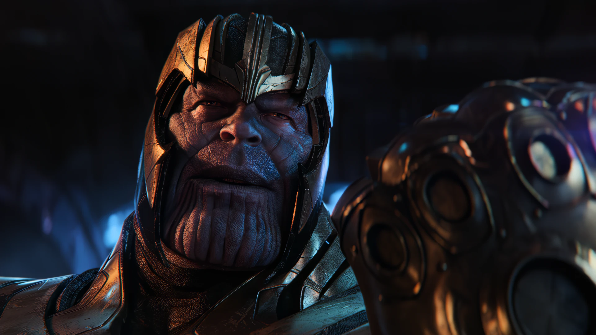

Střih. Grafika. Obsah.
Jsem BeneG. Stříhám videa, dělám grafiku a tvořím obsah pro YouTube, Reels a TikTok. Umím se postarat i o celé sociální sítě — od nápadu přes střih a vizuál až po publikaci.
Co umím
YouTube videa
Klasická dlouhá videa. Pohlídám tempo, ať lidi neodkliknou po první minutě.
Premiere Pro · 4KShorts / Reels / TikTok
Rychlé střihy, titulky a hook hned v úvodu. Formát, který se dneska sleduje nejvíc.
9:16 · titulky · SFXMotion & grafika
Intra, přechody, animované texty a efekty v After Effects, ať tvoje video nevypadá jako každé druhé.
After EffectsUpscale videí
Staré nebo rozmazané záběry proženu Topazem a vytáhnu z nich čisté 4K. Funguje to líp, než bys čekal.
Topaz Video · až 4KGrafika
Thumbnaily, bannery a kompletní vizuál pro kanál nebo značku.
PhotoshopSpráva sociálních sítí
Vezmu si na starost celý profil — plán obsahu, publikaci i konzistentní vizuál, aby sítě rostly.
IG · TikTok · YTUkázky tvorby
Ukázka přímo ze střižny. Víc videí najdeš na mých profilech níž.
Upscale


Potáhni posuvníkem a mrkni na ten rozdíl.
Kde působím
Máš materiál?
Pojď do toho.
Napiš mi, co potřebuješ nastříhat, a ozvu se ti zpátky — většinou do 24 hodin.
benegedit@gmail.com